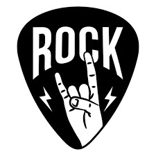

El rock es un amplio género de música popular originado a principios de la década de 1950 en Estados Unidos y que derivó en un gran rango de diferentes estilos a mediados de los años 1960 y posteriores, particularmente en ese país y Reino Unido.12 Tiene sus raíces en el rock and roll de los años 50, estilo surgido directamente de géneros como el blues, el rhythm and blues (pertenecientes a la música afroamericana) y el country. También se nutrió fuertemente del blues eléctrico y el folk, además de incorporar elementos del jazz y la música clásica, entre otras fuentes. Instrumentalmente, se centra en la guitarra eléctrica, en general como parte de un grupo integrado por batería, bajo, uno o más cantantes y, algunas veces, instrumentos de teclado como el órgano y el piano. Usualmente, se basa en canciones en compás de 4/4 y una estructura verso-estribillo.
